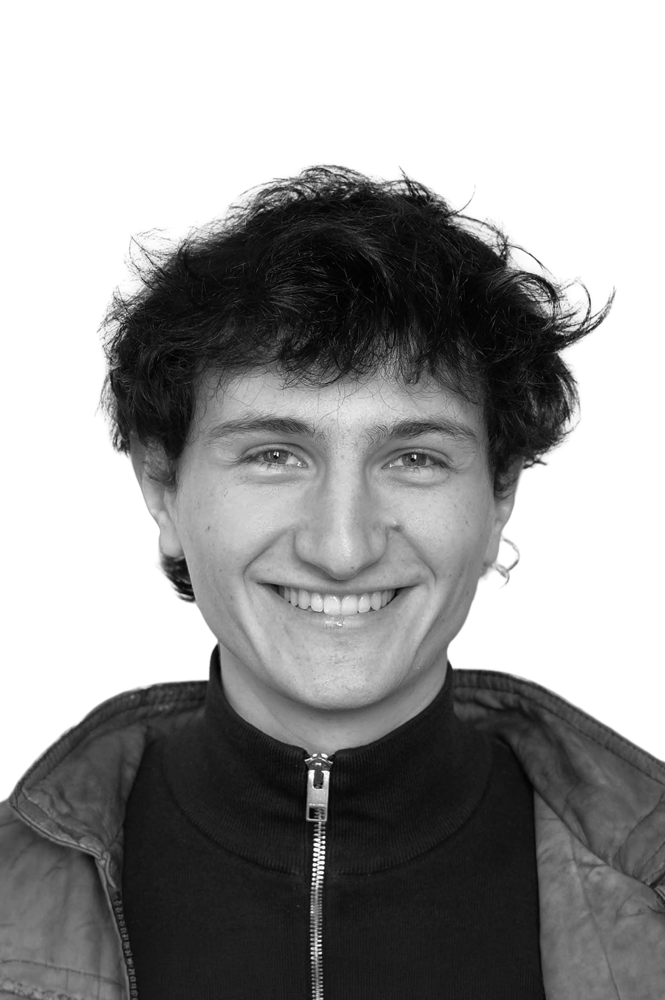

Computational Architect
"On a path of a thousand dreams, we are looking for reality."
- Yuval Noah Harari -
A journey. ETH Zürich, MVRDV Rotterdam, HSLU Luzern, CONFLUENCE Paris. A balancing act between fiction and reality.
At their intersection, the convergence of architecture and technology. The starting point for any operation.
Experiments on different levels of abstraction - code, text, images, models, videos, projections.
Architectural experiments that raise questions to the status quo.
Architecture is always ideological. Architecture is always contextual. Architecture is always political.
A manifestation of our society. An artefact of the cycles of our human existence.
Therein, I propose a more connected approach — one that accepts the ruptures of our time.
"We almost got used to the luxury of asking a question, just to see the smile on his face, and then we knew he did not only have the answer,
he also explored further and gave us new insights and results."
- Sanne van der Burgh -